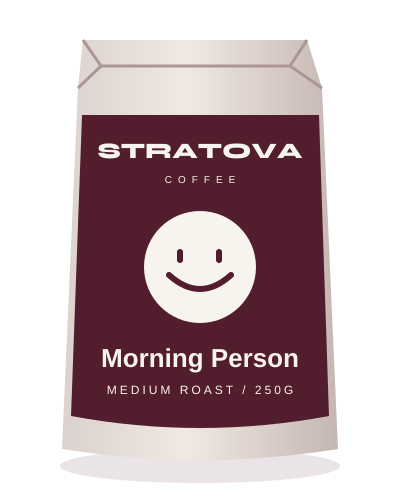
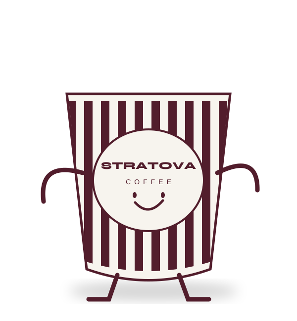
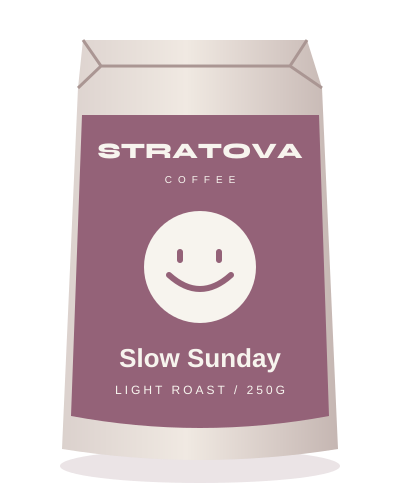
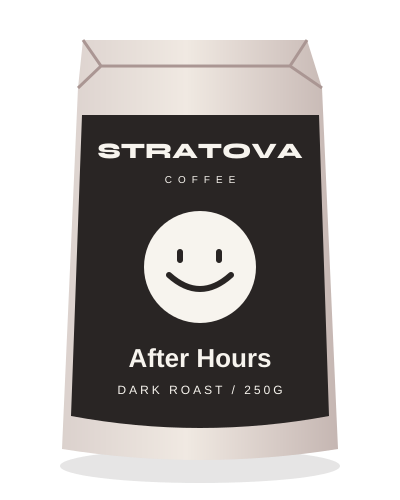
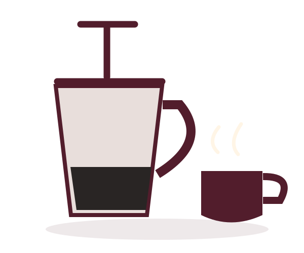

01 / MEDIUM

Morning Person
£11.50Balanced, bright. Your everyday good idea.
Chocolate · orange · almond
your dailyGood coffee. Small rituals.
Something worth getting up for.
MEET YOUR MORNING PEOPLE
Three blends. A thousand little moments.
Find the one that feels like you.
Demo catalogue · illustrative prices · no checkout

Balanced, bright. Your everyday good idea.
Chocolate · orange · almond
Soft edges. Absolutely no hurry.
Caramel · biscuit · pear
A little darker. A lot to love.
Cocoa · toasted nuts · molassesNO WRONG SIDE OF THE BED
A couple of choices. A coffee with your name on it.
Figuratively, of course.
FROM BEAN TO YOUR FAVOURITE MUG

Bright and balanced? Deep and bold? Follow your taste buds.
Fine for espresso, medium for filter, coarse for cafetière. A small detail that makes a difference.
Put the phone down. Pick the mug up. The next five minutes are yours.
A LITTLE MORE ABOUT STRATOVA COFFEE
Stratova Coffee is a brand concept from Stratova Consulting, built around a simple idea: everyday moments deserve a little attention. The first sip. The kitchen conversation. The quiet before everything starts.
Nothing grand. Just something good, every day.
take a breath.SAME TIME TOMORROW?